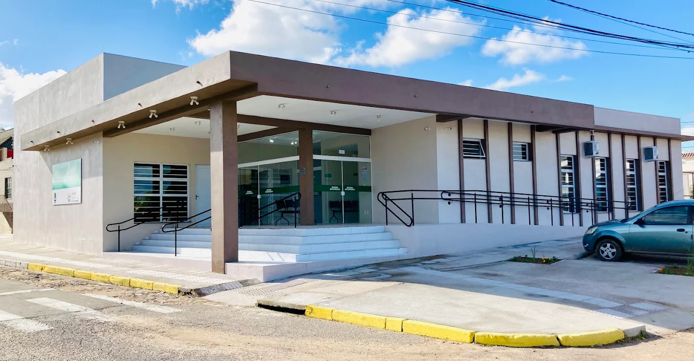
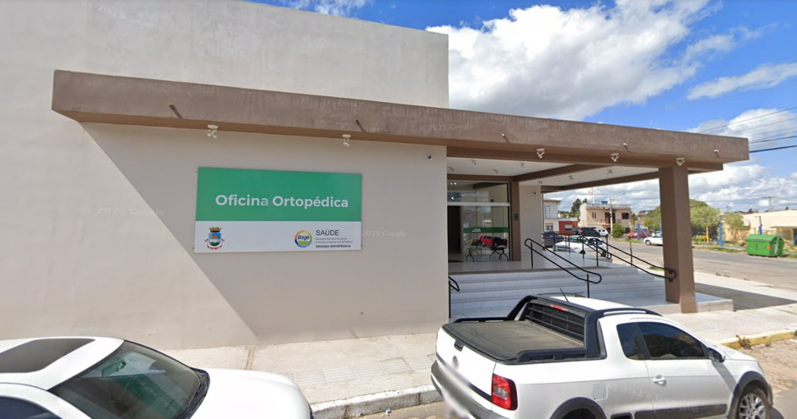

Sobre

A Oficina Ortopédica de Bagé é um serviço essencial e de referência que atua na produção, adaptação e entrega de dispositivos ortopédicos, promovendo a reabilitação física e a melhoria da qualidade de vida de seus usuários.
Mantida pelo município, esta oficina não beneficia apenas a população bageense, mas também se estende a diversos municípios vizinhos, consolidando-se como um polo regional de atendimento em saúde.
Serviços Oferecidos
- Órteses: Dispositivos externos aplicados para modificar as características estruturais e funcionais do sistema neuromusculoesquelético.
- Próteses: Dispositivos que substituem membros ou partes do corpo ausentes.
- Cadeiras de Rodas e de Banho: Para facilitar a mobilidade e o autocuidado.
- Muletas e Andadores: Auxiliares de marcha.

Como Acessar os Serviços
O acesso aos serviços e dispositivos da Oficina Ortopédica de Bagé é realizado através do Sistema Único de Saúde (SUS), seguindo os passos de regulação estadual:
- Consulta: O paciente deve primeiro procurar a Unidade Básica de Saúde (Posto de Saúde) mais próxima para uma consulta e obter a solicitação médica do dispositivo;
- Encaminhamento e Cadastro: De posse da solicitação, o paciente deve se dirigir ao serviço de Reabilitação Física de Bagé, onde será cadastrado no Sistema de Regulação (SISREG);
- Avaliação: Após ser chamado pelo sistema, o paciente passará por uma avaliação detalhada com um fisioterapeuta ou outro profissional da equipe, que realizará os procedimentos necessários para a medição e o molde do dispositivo.
- Entrega: Após a confecção (que tem um prazo variável conforme o tipo de dispositivo), a entrega é agendada, e o paciente inicia o processo de treinamento e adaptação ao novo item.
Localização
Endereço: R. Ernesto Médici, 800 - Getúlio Vargas, Bagé - RS, 96412-650